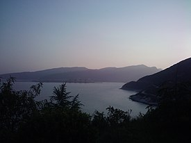

La Isla Lian (en chino: 连岛; pinyin: lián dǎo) es la isla más grande en la ciudad-prefectura de Lianyungang, provincia de Jiangsu, China. La isla se encuentra dentro de la bahía de Haizhou en el mar Amarillo. Se trata de un territorio de 9 km de longitud de este a oeste y que tiene una superficie de 7,57 km². 80% de la isla está cubierta de bosques. El dique en el mar más largo en China (6,7 km de largo) se conecta la isla por el este de la ciudad de Lianyungang. Lian es la única atracción turística clase AAAA en la costa de Jiangsu. La isla era conocida anteriormente como colina de Yingyou.